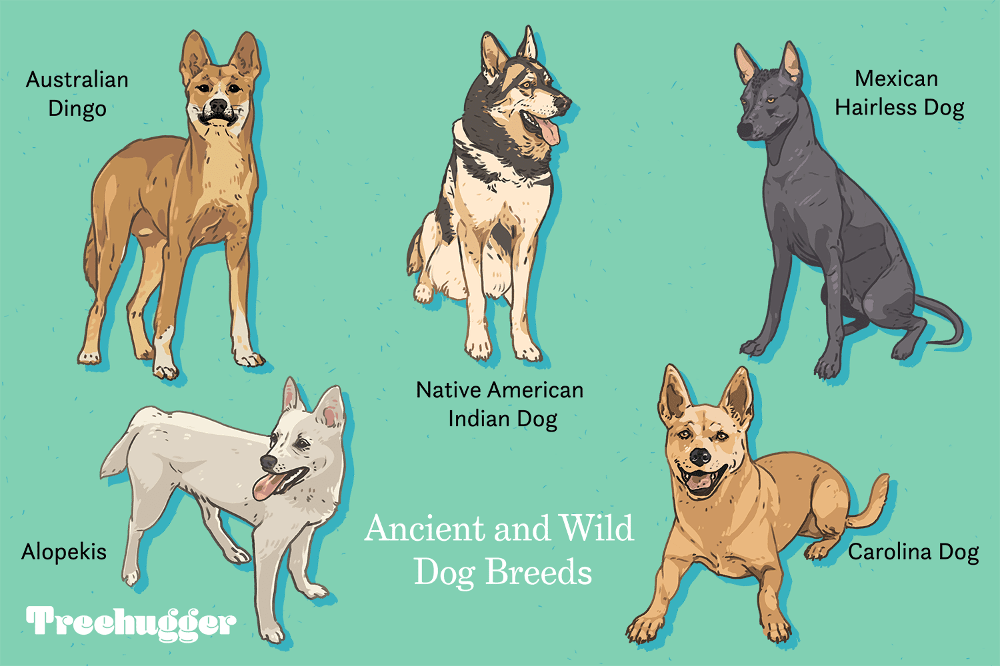

History of Dogs
Dogs have been human companions for over 15,000 years. Originally domesticated wolves, dogs have evolved alongside humans to become loyal pets and working animals. They were used for hunting, herding, protection, and even companionship in ancient civilizations.

Dog Behavior
Dogs are known for their loyalty and social nature. They are pack animals by instinct and often see their human families as part of their pack. Dogs communicate through body language, barking, and tail-wagging. Their behavior can vary greatly depending on breed, training, and environment.

Caring for Your Dog
Dogs require regular exercise, a nutritious diet, and plenty of mental stimulation to stay healthy and happy. It’s important to provide routine vet visits, keep up with vaccinations, and maintain a grooming schedule. Some breeds may need extra care due to specific health or grooming needs.
Different Breeds of Dogs
There are hundreds of dog breeds, each with its unique characteristics and care requirements. Popular breeds include the energetic Labrador Retriever, the protective German Shepherd, and the playful Golden Retriever. Each breed brings a distinct personality and set of care needs.